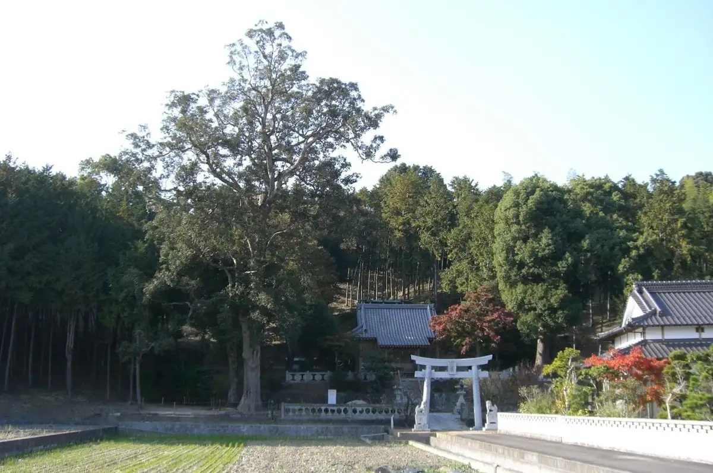
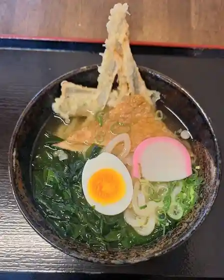
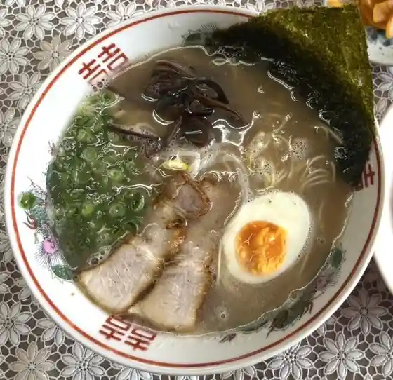
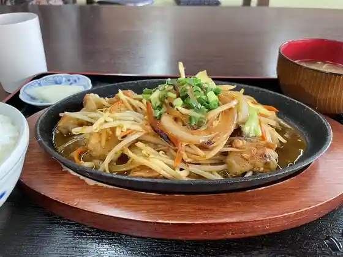
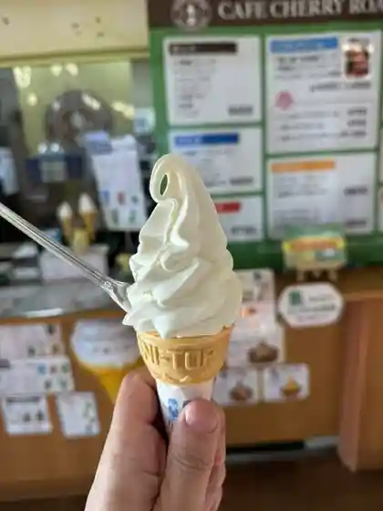
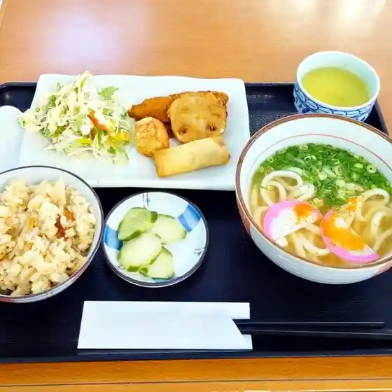
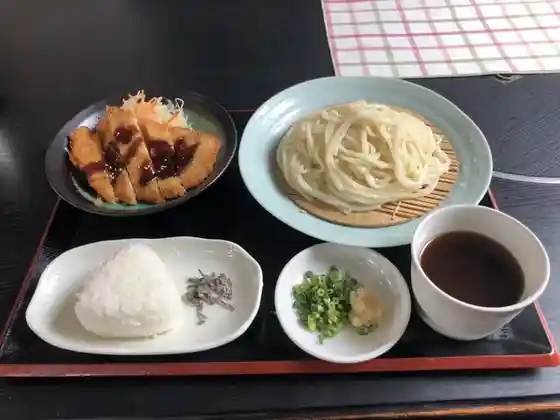
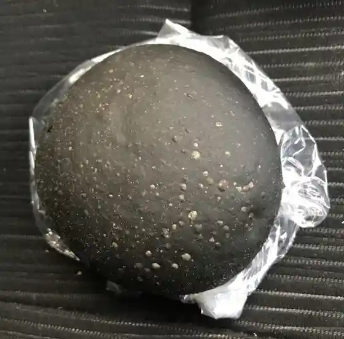
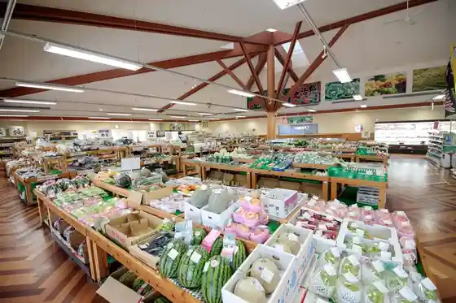
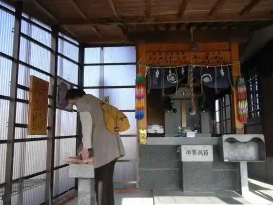

Oto
Oto · Fukuoka
Oto
Highlighted on the Fukuoka map.

Dining
豊前裏打会 津田屋流 麺チャンピオン
Buzen Urauchi Kai Tsuda Ya Ryuu Men Chanpion

道の駅 おおとう桜街道 もみじ館
Michi No Eki Ootou Sakura Kaidou Momiji Kan

壱好
Kazuyoshi
神だこ
Kami Dako

道の駅おおとう桜街道 さくら館
Michi No Eki Ootou Sakura Kaidou Sakura Kan

カフェ チェリーロード
Kafe Cheriiroodo

丸亀うどん
Marugame Udon

キッチン わぽ
Kitchin Wapo

PANET
PANET
みもざ
Mimoza
らーめん 咲ら
Raamen Saki Ra
本場大阪 たこ焼き くるりんちょ
Honba Oosaka Tako Yaki Kururincho
鷹羽ロイヤルカントリークラブ
Takanoha Roiyarukantoriikurabu
スマイルチキン！
Sumairuchikin !
揚物屋 弁天
Agemono Ya Benten
サニーサイド
Saniisaido
本場韓国家庭料理 宋家 おおとう桜街道店
Honba Kankoku Kateiryouri Souka Ootou Sakura Kaidou Mise
四川亭
Shisen Tei
FELICE CAFE
FELICE CAFE
さっちゃん
Satchan
おおとうにんにく食品
Ootouninniku Shokuhin
犬と猫のカフェ 有吉工務店 大任店
Inu To Neko No Kafe Ariyoshi Koumuten Tainin Mise
DARIN CAFE
DARIN CAFE
善弓
Zen Yumi
崎山青果
Sakiyama Seika
定食ミホ
Teishoku Miho
Toge Chaya
Toge Chaya
Shokujidokoro Momijikan
Shokujidokoro Momijikan
Ramen Sakura
Ramen Sakura
Sunny Side
Sunny Side
Smile Chicken
Smile Chicken
Hanamusubi
Hanamusubi
Zenkyu
Zenkyu
Soke Oto Sakura Kaido
Soke Oto Sakura Kaido
Yasumiba
Yasumiba
Ryomatei
Ryomatei
Ramen Ichiyoshi
Ramen Ichiyoshi
Sights
Roadside Station Oto Sakura Kaido

Oto Hana Park
Sabotenhausu
Sugawara Shrine
Kakae no O Ishi Sama

Oto Chuo Park
Kentoku Tera Burial Mound
Oto Chuosen Soi